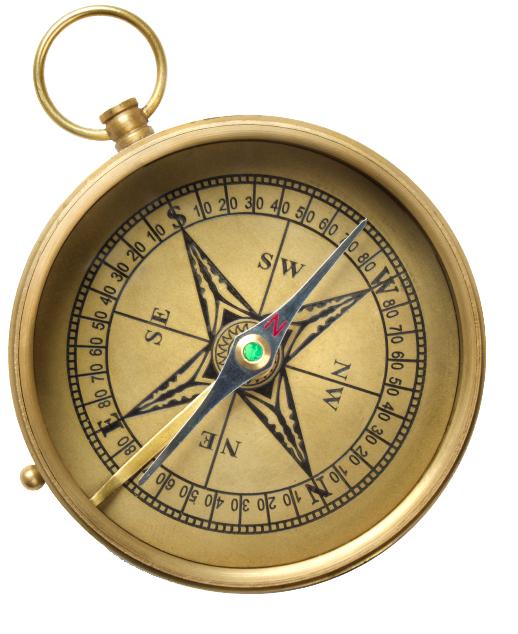
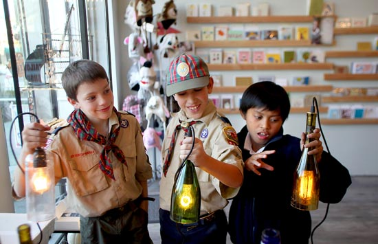

My childhood consisted of endless hours of watching Spondgebob, exploring my neighborhood, meeting friends at the park,and more!
Childhood |
Memories |
Story |
Spongebob |
 |
For as long as I can remember, I know that I have been watching Spongebob forever.Spongebob is my favorite childhood TV show growing up.
I have so many fun and exciting memories with Spongebob and it saddens me to hear that the creators of the show are thinking of canceling it soon. ;(
|
Exploration |
 |
As a child, I would always go outside and explore either with my friends or with my older brother. We would explore the tree covered sidewalks beside our house.
I would often find rock of all different shapes and sizes and I would collect them.
When I was with my friends, we would often play hide and seek, follow the leader, or we would pretend that our surroundings were different and more exciting.
|
Cub Scouts |
 |
During elementary, I would always admire and look up to my brother because he was a cub scout and I always though that that was so cool.
I was inspired and motivated to now become a cub scout myself. When I had finally become a cubscout, I enjoyed the normal cub scout activites such as camping, hiking, service, and learning about how to surive in a dangerous situation.
|